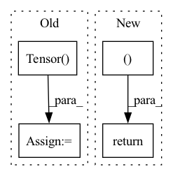

Pattern ID :4265
Before Change
// Convert ndArray input into torch tensor
if isinstance(input, pd.DataFrame):
input = input.values
input = torch.Tensor( input)
self._model = self._model.to("cpu")
output = self._model(input)
// Convert output back to ndarray
return output.detach().cpu().numpy()After Change
input = self.perform_pipeline(x) if self._use_pipeline else x
if self._backend == "pytorch":
return self.predict_proba(input)[:, 1].reshape((-1, 1 ))
elif self._backend == "tensorflow":
// keep output in shape N x 1
return self._model.predict(input)[:, 1].reshape((-1, 1))In pattern: SUPERPATTERN
Frequency: 4
Non-data size: 4
Instances Fragment ID: 15511805
Project Name: indyfree/carla
Commit Name: 9b4d02120789794e885d4e47da522e1a1c17ed99
Time: 2021-05-27
Author: sbielawski@web.de
File Name: carla/models/catalog/catalog.py
M Class Name: MLModelCatalog
N Class Name: MLModelCatalog
M Method Name: predict(2)
N Method Name: predict(2)
M Parent Class: MLModel
N Parent Class: MLModel
M File Name: carla/models/catalog/catalog.py
N File Name: carla/models/catalog/catalog.py
M Start Line: 201
M End Line: 224
N Start Line: 201
N End Line: 204
Before Change
decode_lengths = torch.LongTensor([len(batch[1]) for batch in batches])
encoder_cont = rnn.pad_sequence(
[torch.Tensor( batch[0]["x_cont"][:length]) for length, batch in zip(encode_lengths, batches)],
batch_first=True,
)
encoder_cat = rnn.pad_sequence(
[torch.LongTensor(batch[0]["x_cat"][:length]) for length, batch in zip(encode_lengths, batches)],
batch_first=True,
)
decoder_cont = rnn.pad_sequence(
[torch.Tensor(batch[0]["x_cont"][length:]) for length, batch in zip(encode_lengths, batches)],
batch_first=True,
)
decoder_cat = rnn.pad_sequence(
[torch.LongTensor(batch[0]["x_cat"][length:]) for length, batch in zip(encode_lengths, batches)],
batch_first=True,
)
target = rnn.pad_sequence([torch.Tensor(batch[1]) for batch in batches], batch_first=True)
x_cat = torch.cat((encoder_cat, decoder_cat), dim=1)
x_cont = torch.cat((encoder_cont, decoder_cont), dim=1)
return (
dict(x_cat=x_cat, x_cont=x_cont, encode_lengths=encode_lengths, decode_lengths=decode_lengths),
target,After Change
)
target = rnn.pad_sequence([batch[1] for batch in batches], batch_first=True)
return (
dict(
encoder_cat=encoder_cat,
encoder_cont=encoder_cont,
encoder_target=encoder_target,
encoder_lengths=encoder_lengths,
decoder_cat=decoder_cat,
decoder_cont=decoder_cont,
decoder_target=target,
decoder_lengths=decoder_lengths,
),
target ,
)
def to_dataloader(self, train: bool = True, **kwargs): Fragment ID: 15511800
Project Name: jdb78/pytorch-forecasting
Commit Name: bfd5feb8183d9ece59c1fd40054ef1ef7b8e789c
Time: 2020-07-14
Author: beitner.jan@bcg.com
File Name: pytorch_forecasting/data.py
M Class Name: TimeSeriesDataSet
N Class Name: TimeSeriesDataSet
M Method Name: _collate_fn(2)
N Method Name: _collate_fn(2)
M Parent Class: Dataset
N Parent Class: Dataset
M File Name: pytorch_forecasting/data.py
N File Name: pytorch_forecasting/data.py
M Start Line: 377
M End Line: 400
N Start Line: 392
N End Line: 419
Before Change
u = np.broadcast_to(u, new_shape)
else:
u = np.random.rand(*new_shape)
u = torch.Tensor( u)
// Invert CDF
u = u.cuda().contiguous()
inds = torch.searchsorted(cdf, u, right=True)After Change
t = (u-cdf_g[...,0])/denom
samples = bins_g[...,0] + t * (bins_g[...,1]-bins_g[...,0])
return samples, inds_g
def saveModel(model, path:str, opt = None, amp = None):
checkpoint = {"model": model.state_dict(),}
if not amp is None: Fragment ID: 15511801
Project Name: enigmatisms/nerf
Commit Name: daf089f00dbd52a01d23527dcce1c2c4c2172d50
Time: 2022-04-23
Author: 984041003@qq.com
File Name: py/utils.py
M Class Name: AnonimousClass
N Class Name: AnonimousClass
M Method Name: sample_pdf(3)
N Method Name: sample_pdf(5)
M Parent Class:
N Parent Class:
M File Name: py/utils.py
N File Name: py/utils.py
M Start Line: 84
M End Line: 127
N Start Line: 92
N End Line: 119
Before Change
grad_b = np.ones(b.shape) * grad_output.data
grad_a = tensor.Tensor(unbroadcast(grad_a, a.shape))
grad_b = tensor.Tensor( unbroadcast(grad_b, b.shape))
return grad_a, grad_b
After Change
grad_a, grad_b = ops_gpu.add_backward(ctx.cl_ctx, ctx.cl_queue, grad_output.data,
a.shape, b.shape)
return tensor.Tensor(grad_a), tensor.Tensor(grad_b)
class Sum(Function):
@staticmethod Fragment ID: 15511794
Project Name: pabannier/nanograd
Commit Name: cfa262ec2ccafd4370bf2dbe7e19f217ea54ab15
Time: 2021-01-17
Author: pierreantoine.bannier@gmail.com
File Name: nanograd/nn/functional.py
M Class Name: Add
N Class Name: Add
M Method Name: backward(2)
N Method Name: backward(2)
M Parent Class: Function
N Parent Class: Function
M File Name: nanograd/nn/functional.py
N File Name: nanograd/nn/functional.py
M Start Line: 313
M End Line: 319
N Start Line: 321
N End Line: 327